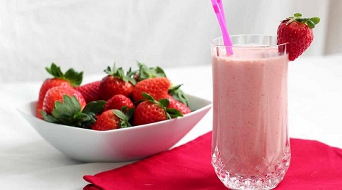

Fresh Strawberry Milkshakes

Details
- No. of servings : 2
- Cooking Time:5 min
List of ingredients
- 1/2 pound fresh strawberries, hulled and sliced, plus whole strawberries, for garnish
- 2 heaping tablespoons sugar
- 1 teaspoon vanilla extract
- 1 pint vanilla ice cream
- 1/2 cup milk
Instruction
-
In a mixing bowl combine the sliced strawberries, sugar and vanilla
extract and stir to combine well. Set aside and allow to macerate for at least 20 minutes and up to 1 hour.
-
In a large mixer, place the strawberries, ice cream, and milk. Blend
until smooth. Pour into ice cream parlor glasses and garnish the rim
of each glass with whole strawberries. Serve immediately.